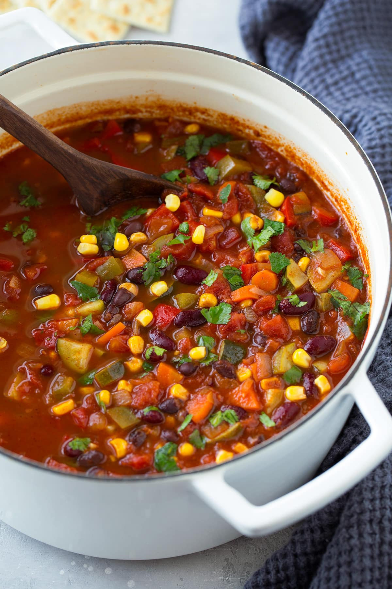

Vegetable Chilli

Description
Full of flavour, veggies and beans this dish, alongside rice, provides a
hearty meal for the whole family!
Ingredients
- White onion
- Garlic
-
Vegatables of choice (pepper, sweet potato, and sweetcorn are good)
- Beans of choice (cannellini or pinto work well)
- Chillis
- Canned tomatoes
- Spicess:cumin and coriander
Instructions
- Cook onions, add garlic and then spices to taste
- Add peppers
- Soften sweet potato by parboiling
- Add in beans and sweet potato
- Add in canned tomatoes
- Et, voilá!
Return to main page